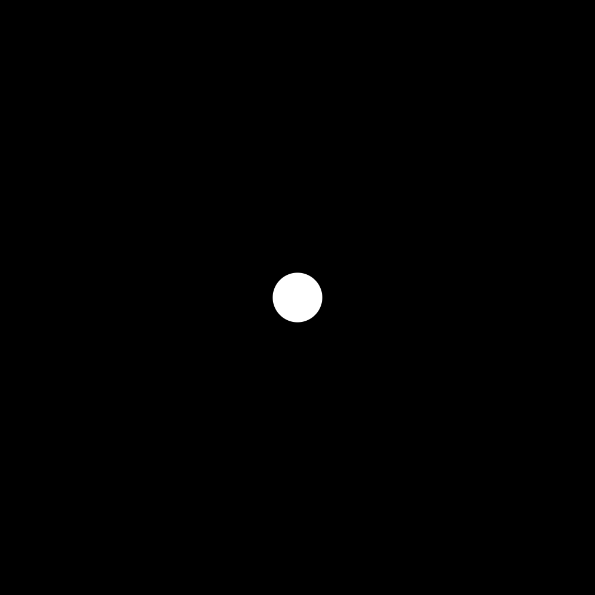

Welcome to Kiln-- a single-page web-app that implements the bare-bones programming language Clay. There are only three types of things in this language:
Like any programming language, we're "commanding" the computer. The commands make up the language we use to tell the computer what it should do.
In Kiln, the commands are all structured around painting abstract, non-representational art. Mostly a bunch of dots.
Essentially, just read the paragraphs, and, whenever you see a command alone on its own line--
> like this
You should enter all of the text to the right of the prompt symbol > exactly as written into the command box on Kiln (the glowing text entry line just below the canvas).
Type each line you see, one at a time, before hitting enter to issue the command(s) to the system. You'll often want to pause a moment between lines to see what changes.
If you're revisiting this document, you can use the images on the hovering lefthand panel to jump right to the section you want.
Key Concepts: painting, moving, internal states, defining commands, repeating commands, output
Here's the most basic primitive command in Kiln: paint.
> paint
We commanded paint. The system took that word-- that symbol composed of that exact combination of letters in that exact order-- and checked it against an internal table of possible commands. It found a primitive command for paint and got to work changing a bunch of pixels in the shape of a circle on the canvas from black to white.
Where once there was no dot.
There is now dot.
We have created dot!
More DOTS! But wait, if we command paint again...
> paint
Nothing happens? Or maybe the exact same thing happened!
Any computing system only does exactly what we (or at least, the authors of its software) tell it to-- we told it to paint again.
What we didn't do was change where we wanted to paint.
So let's try a different command, move.
> move
... Did anything happen? It didn't throw up an error, but we didn't see any outward change.
Let's try painting again.
> paint
Aha! Looks like that move DID do something-- it changed where the system was prepared to paint, from the center (the default location) to a random position elsewhere on the canvas.
We didn't see any change here, but we saw that the system did change something behind the scenes.
We can check out what's happening by using the meta command -state to check what's going on under the hood.
> -state
We can see that this command outputs something into Kiln's running log, below the command entry line.
Note the X and Y coordinates-- these indicate where the center of the dot will appear if we call paint right now.
Let's change that by calling move again, and then calling -state again.
> move
> -state
Heyyy, look at that, the coordinates changed! Try it a few more times and watch the values change.
> move
> -state
> move
> -state
> move
> -state
This gives us a way to check what's going on inside the system when nothing is obviously happening on the surface. We won't need this all the time, but it's good to know how to check when something isn't working quite like we expected!
So, we've learned how to paint a circle, and how to move to a new location. What if we want to just do both of those at once? We run any number of commands in a row, processed left-to-right.
> move paint
This lets us bundle up multiple commands into a single line! Let's do it a few more times.
> move paint
> move paint
> move paint
> move paint
Building on the ability to combine commands into a single line, we can ALSO combine them into a NEW command to use repeatedly later!
To define a new command-- a user command-- we use this format:
[new command] >> [other] [command] [names]
(Replacing the [ ] bracketed words with command names.)
Let's define the command dot, which will move the pointer, and then paint.
> dot >> move paint
Okay, so we've defined a new command dot. Let's try it out.
> dot
> dot
> dot
> dot
Nice! By combining two primitives, we've made a much more useful command-- dot will place a random dot somewhere on the screen.
Also notice that the user command dot now shows up on the interface!
Kiln gives every defined command-- primitive or user-- its own button on the interface to help remind you what's available.
This is great for playing around and quickly testing things-- just remember that it's still all the language of Clay underneath.
Every button on Kiln's interface-- or ANY computer interface-- is just executing a command in the language the program is using behind the scenes.
So, we taught Kiln how to make randomly placed dots.
If we only want to make a few dots, we can just type "dot" several times.
> dot dot dot dot dot
But! What if we want to make a LOT of dots? We can use Clay's repetition feature. By putting a number before a command, we can tell the system to repeat it that many times.
Let's add 20 dots to this screen.
> 20dot
Hey! That's 20 fresh dots, all from a single command!
Let's get wild with it.
> 200dot
That's a lot of dots, y'all.
MORE!
> 2000dot
... that was too many dots.
Notice that the command for repetition isn't 20dots, as in the english plural.
The Clay language does NOT have a concept of "plural-S" like english does.
Trying to add that "s" will throw up an error.
> 20dots
That extra 's' just makes the system think the command you're asking for doesn't exist.
It knows a command called dot, but it's never heard of a command called dots.
Remember, Kiln recognizes commands by the exact letters in an exact order.
After all, you could have defined a completely different command named dots if you'd wanted to.
Anyway, we done made a mess of dots, huh.
It's getting crowded.
Let's clean up using the -clean meta command.
> -clean
Great! We've cleaned up to a fresh, blank canvas.
But, take note! We have only cleaned the canvas. Everything else about Kiln is still just as it was a moment ago.
Let's check the -state, -clean the canvas again, then check the -state again.
> -stateNote the X,Y coordinates.
> -clean
> -state
Notice that the x/y coordinates in the state are the same before and after the -clean command.
To reset the system's internal state, we can use the meta command -reset.
> -reset
It's important to recognize that some meta commands only affect an external or internal element of the Kiln system, just like with primitive commands.
Okay, so we've got a clean canvas. Let's make something fresh.
What would 250 dots against this fresh background look like?
> 250dot
Nice.
Less messy than our 2000dot, a bit more form to look at.
Let's save it.
The -snapshot meta command tells Kiln to package up the canvas into a .png file that your browser can then download directly.
> -snapshot
Save this image somewhere easy to find, so you can submit it for this assignment!
So there you go! You just instructed a machine to algorithmically create some simple dot-art.
Alright, we're all done here.
While closing the Kiln app's page will do most cleanup for us, it's good practice to intentionally clean your space so that you aren't surprised if something leftover sneaks into your next session!
Let's -clean the canvas (remembering that we already saved the output image).
> -clean
And then we'll -reset the state of the system.
> -reset
Finally, let's deal with the user commands we've created.
Your recent user commands are saved in your browser's local storage, so if you accidentally close Kiln's tab, your commands will still be there.
But! This also means that your old commands will start to accumulate and might start to clutter up the space, if they aren't useful anymore.
To avoid that sort of clutter, the -forget meta command lets us intentionally clear our user commands so we can start fresh next time.
> -forget
There. Leave no trace! It's like we were never here! We can start fresh next time.
In this assignment, we covered:
In the submission page for Assignment 1 on Blackboard, submit the following:""
Yup! It's easy as that. Told you it'd be a gentle introduction.
Concepts: combining multiple commands, bottom-up design, repeating commands, colors
Okay, we've managed to paint some dots on a screen and save the image. That's pretty neat. But currently we're dealing with a pretty simple world: white dots on a black background.
Let's get a little more interesting by increasing the complexity of our art. Our current color scheme is binary-- exactly two possible values: black or white. If we look at some of the available primitive commands, though, we see some things that might be... more colors!
Before we do anything else, I want us working from a clean slate, so JUST IN CASE, let's run the same commands from the end of the last segment to make sure there's no lingering paint, hidden states, or user commands that might trip up our fresh start here.
> -clean
> -reset
> -forget
So when we paint a white dot...
> paint
... its system interprets that command as something along the lines of "change the pixels around my current position (X and Y coordinates) from whatever color they were (BLACK) to my current color (WHITE)".
Let's look at the -state to see some of this...
> -state
So now, looking at the state... We've already discussed the X and Y coordinates quietly representing the position of the painter. But "color" is showing something strange-- "FFFFFF" What the heck is the color fffffffffffffff?
Here's the trick: "FFFFFF" is actually a representation of three separate numbers. Each slot is a value between '0' and 'F', [0123456789ABCDEF] This representation of numbers is known as hexadecimal-- hex meaning 6, and decimal meaning 10, so 16 possible values per slot.
Contrast hexadecimal representation with our standard numerical system we use every day, decimal, where each slot can have only 0-9, [0123456789]. We can see that hexadecimal is more compact, where a single slot can store 16 different values, versus decimal's 10.
Pixel colors on modern screens are typically determined by three separate values: amount of red, amount of green, and amount of blue. In the "FFFFFF" color notation, there are 2 values per color, left to right, for red, green, and blue, all between 0 (00) and 255 (FF).
Looking back at our "FFFFFF" representing "white", and knowing a bit more about hexadecimal now, we can break it down to realize that this is essentially just saying "turn the amount of all three colors up to the maximum possible".
SO! When we tell the system to paint when the color is set to "FFFFFF", it changes all the pixels around the painter's position to be maxed out in all three colors-- a white dot!
Kiln comes with several different preset colors we can mess with.
Let's try pink.
> pink
Okay, similar to move, pink hasn't done anything obvious.
But let's check the -state.
> -state
Aha! The color value in the state has changed from "FFFFFF" to "FF00FF", or, through our lens...
Let's see what that looks like...
> paint
We've created a pink dot!
Right on top of our previous white dot, too.
Let's explore some more colors.
> indigo paint
> -state
There's an indigo dot.
> cerise paint
> -state
And now a cerise dot, cool.
Alright, we're getting the hang of colors. Now let's do something more complex with them.
Alright, if we're going to build up to a larger something-or-other using these different colored dots, we could go one of two ways:
Both are fine ways to work, and you often want to keep both in mind, but for now we'll focus on the bottom up.
To start, let's reuse the concept of the dot from the first segment as a basic user command.
> dot >> move paint
Great, we've got our favorite dot command going again. Let's test it real quick.
> 5dot
Great, working as intended. Now let's elaborate on it...
So now we can make a dot any time we want, just as before. Well, now that we know about colors, we make different kinds of dots!
Let's scatter a few pink dots around.
> pink 5dot
How about some aqua, we haven't tried that yet.
> aqua 5dot
How about a BUNCH of indigo dots!
> indigo 50dot
And one cerise dot.
> cerise dot
So we see how useful it is to swap the color of the painter before painting another dot.
Let's combine our dot user command with these color changing primitive commands to make commands that create specific types of dots.
We do this the same way we define any user command, but we can include our user command dot when we do.
Let's define a specific dot command for each of the colors we've seen so far. We might edit these later, so we'll use a generic name for these colored dots (e.g., "dota" and "dotb"), rather than names specific to these colors (e.g., "pinkdot" or "indigodot")
> dota >> pink dot
> dotb >> indigo dot
> dotc >> cerise dot
> dotd >> aqua dot
Great! Now we have four different colored dots. Let's test them.
> dota dotb dotc dotd
They work!
Let's try a whole lot more, so we can fill the space up.
> 500dota 500dotb 500dotc 500dotd
Well, that seems to have worked, but we're seeing a LOT of aqua in this, right? And where's all the pink?
Remember, the commands occur left-to-right, so commands on the left will be read and executed first, and thus whatever is painted in the first command will get covered up by things that come next.
So right now, although we've used the same number of dots of each color, the first dots are stuck in the back, while the most recent dots are all over the place in front!
How do we fix this?
Right now, we're telling Kiln to paint a whole lot of dots, one color at a time. Instead, to make them more evenly spread out, we could paint one dot of each color, and repeat that.
But how do we do that without having to type dota dotb dotc dotd dota dotb dotc dotd dota ... repeating about 500 times?
We can wrap the behavior we DO want to repeat-- i.e., painting one of each color dot in order-- into its own user command, and then repeat that command. We'll call it "confetto". (Did you know that's the singular form of "confetti"?)
> confetto >> dota dotb dotc dotd
Let's -clean things up, then test this new multicolor dot command!
> -clean
> confetto
> 2confetto
> 50confetto
There we go! We've changed from repeating individual colors, to repeating "one of each color".
Let's wrap all this up in a single command so we can paint this with a single word or button press! First define it...
> confetti >> 500confetto
Then issue the command...
> confetti
This looks good. Let's save it!
First we'll clean up, then draw, then snapshot it.
> -clean
> confetti
> -snapshot
Save this image somewhere easy to find, so you can submit it for this assignment!
Ta-da: you've made some colorful, non-representational art by issuing commands to a computer.
So now we have several commands defined, from the complex and lively confetti all the way back down to the humble dot.
Each one of these commands is direclty connected to-- and composed of, the others. Let's trace it down for a moment...
confetti is composed of 500 confetto repetitions.confetto command calls all four of dota, dotb, dotc, and dotd once each.dot_ commands calls one primitive color-changing command (pink,indigo,cerise, and aqua), followed by dot.dot calls the primitive commands move and paintNotice the flow of it all-- these higher-complexity concepts like confetti or confetto are all made up of other user-defined concepts, literal actions taken by the system, or both.
The linguists among us may see the outline of a generative grammar hiding somewhere in here, but for the rest of us, this is essentially how all language works: packaging up specific, semantically meaningful elements into more and more complex representative ideas (and, often, jargon).
In this assignment:
In the submission page for Assignment 2 on Blackboard, submit the following :
Concepts: editing commands, edit depth, size, and transparency
Alright, so we have this one-click command to splatter our canvas with tons of these four colors of dots: pink,indigo,cerise, and aqua.
But what if we want other colors? How can we do that?
The beauty of the commands we've defined is that they're a reusable structure. We don't have to start from scratch just to change the colors.
Here, let's edit dota to use a different color.
Let's go with ember.
> dota >> ember dot
Now let's try our splatter-shot confetti command again.
> confetti
There we go! We changed a single definition in this command structure, and it has radically altered the color scheme.
Let's swap the rest with other colors, then call confetti again.
> dotb >> dkgray dot
> dotc >> cerise dot
> dotd >> indigo dot
> confetti
Same concept. Same instructions. Just a couple of color names swapped out, and we've got a wildly different painting on our hands.
Now pick your own colors!
Redefine the dota, dotb, dotc, and dotd commands using four colors of your choice.
The available colors are: pink, indigo, cerise, aqua, lemon, lime, ember, white, ltgray, mdgray, dkgray, and black.
Play around with it a bit until you find a color scheme you like.
Explore the space by redefining one or two of the dot# commands above with a color, then calling confetti to see how it looks.
Once you're happy with it, let's do a clean snapshot.
> -clean
> confetti
> -snapshot
Save this image somewhere easy to find, so you can submit it for this assignment!
Ready for a radical shift without much effort?
The commands we just edited were in the middle of our structure-- we made four key changes to some special-purpose commands and it altered our painting quite a bit. But the more fundamental a command is to the whole structure, the more a change will shake things up.
So let's revisit our most basic user command: dot.
Right now, dot just says move to a random place, and then paint.
Let's add something new into the mix: setting a random transparency for our dots using the alpha command.
All we need to do is call the alpha command somewhere in dot before it calls paint.
> dot >> move alpha paint
> confetti
Would you look at that-- look at how changing the transparency has affected the depth of this painting.
Let's make one more change to this most fundamental command: set a random size of the dot.
> dot >> move size alpha paint
> confetti
Whew! We're in a much different place than when we started, huh? We've changed very little about the definition of our program's command structure, but we've radically changed the output image.
Speaking of which, let's generate a fresh one. You know the drill:
> -clean
> confetti
Now, you could save this one as it is. But there's a lot of randomness in this generative art, maybe we want to see a different version.
> confetti
> confetti
> confetti
> confetti
Notice how it's pretty wildly different each time.
Continue typing or pressing the button for confetti until you've got something you like.
Then let's save it:
> -snapshot
Save this image somewhere easy to find, so you can submit it for this assignment!
Alright, before you leave, remember to clean up your workspace.
> -clean
> -reset
> -forget
Now the next time you load up the Kiln site, it will sit fresh and empty, waiting for you to cook up some commands.

In this assignment, we examined:
In the submission page for Assignment 3 on Blackboard, submit the following :

So now you've seen some of the fundamentals of Kiln, and how they can be combined to create various forms of abstract art. I'd like to see where you can go from here.
Explore the rest of Kiln's functions and experiment a bit.
To see descriptions of Kiln's full suite of commands, type or press the button labeled -help to pop open a help panel at the bottom of the app.
The descriptions are brief, but should be enough to orient your curiosity.
> -help
Also note that there are a lot of commands hidden from the main interface, so they may not all be totally stable, but you should be just fine messing with them.
[do whatever you feel like for a while]
[like, at least 20 minutes or so]
Remember, this is art, there's no exact correct answer here. As long as you're getting your head into the idea of expressing yourself using this new set of tools, you're good.
For a bit of inspiration, the image above this assignment is the most semi-coherent thing I've come up with so far.
After you've explored a bit and settled on something you feel represents the highlights of your exploration, show me what you've got!
Use the command -snapshot to capture the image as before, but also use the command -memorize to save a copy of your user commands in the form of a text file.
Include both of these in your final submission.
In the submission page for Assignment 4 on Blackboard, submit the following :

And thanks for coming along! I hope you at least got a kick out of messing with these commands, tapping a few buttons, teaching a machine how to paint, and picking up some of the underpinnings of all modern programming along the way.
-JKL